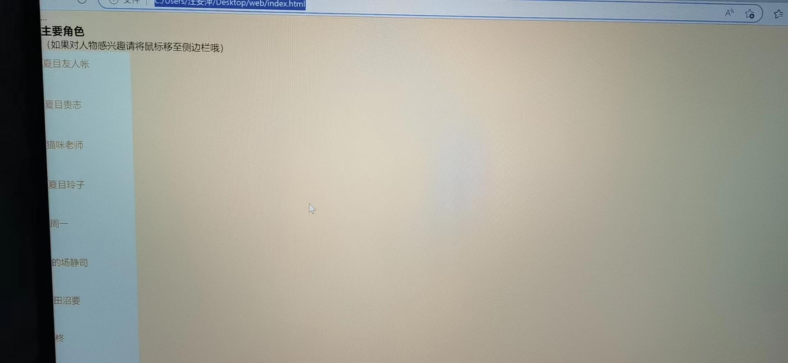
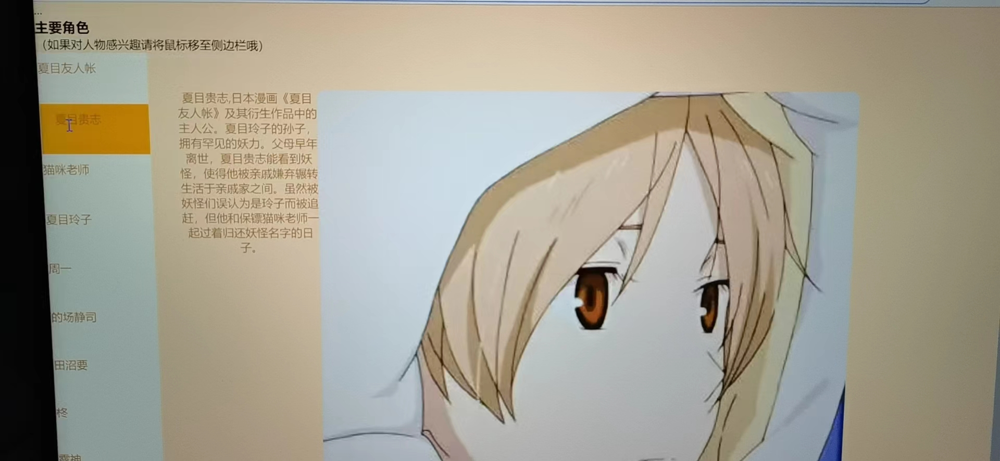
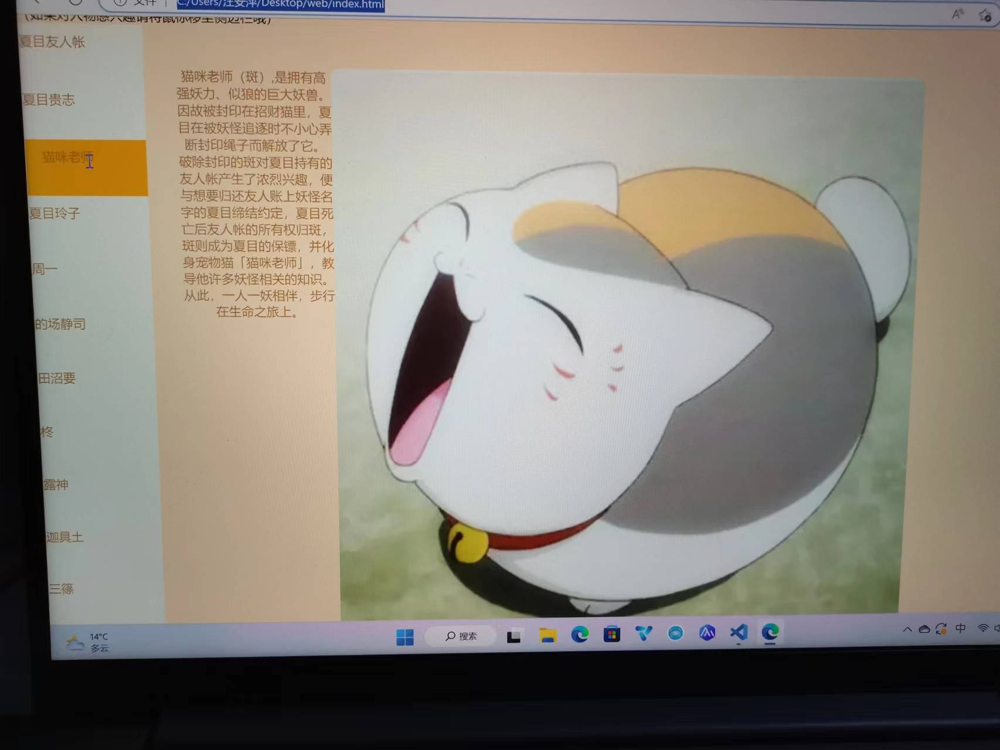
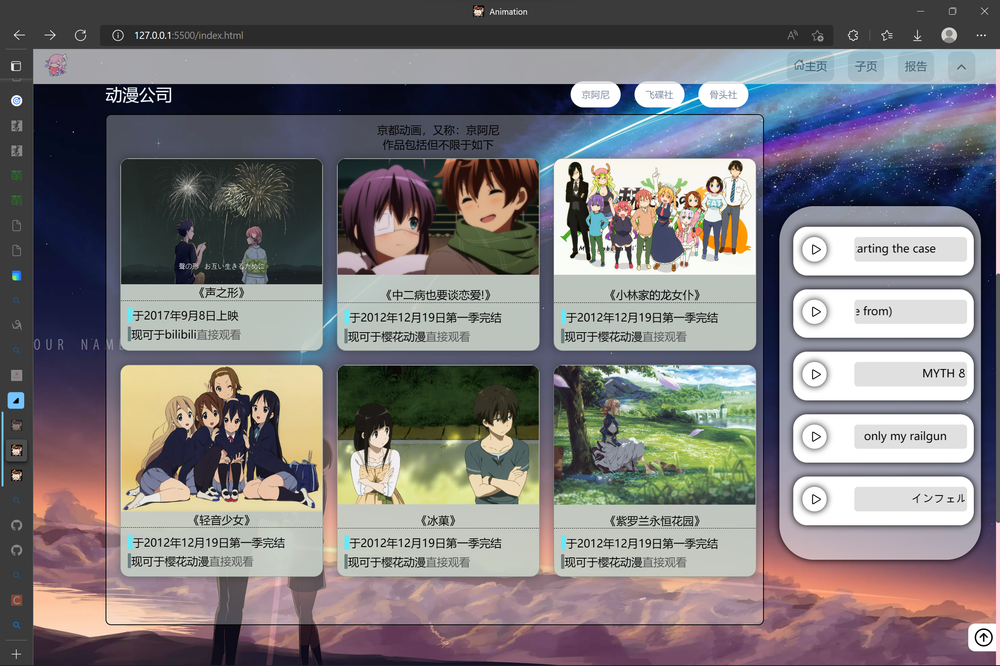
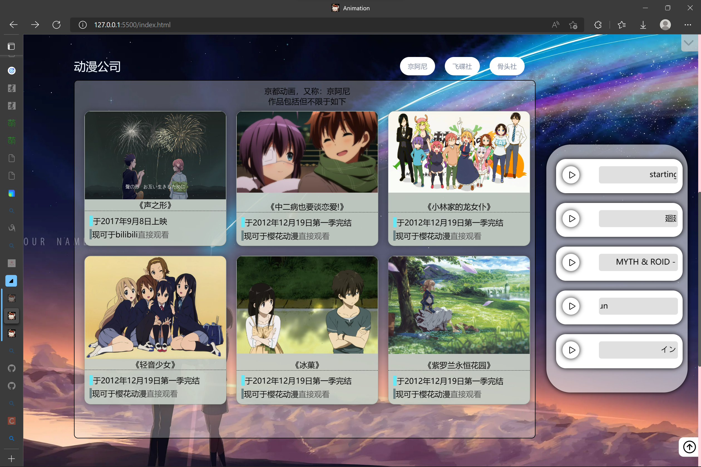
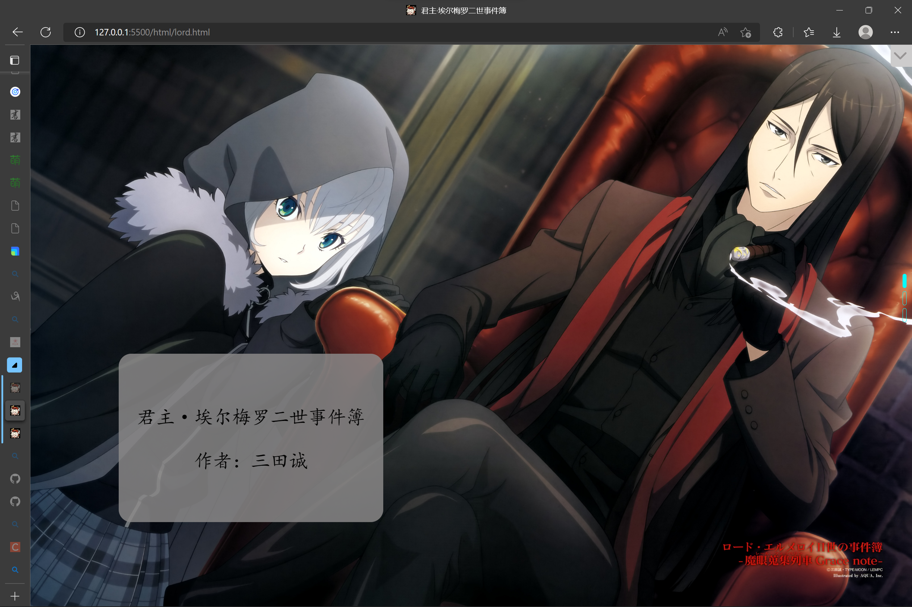

| 姓名 | 学号 | 班级 |
|---|---|---|
| 汪安萍 | 0223447 | 软件2212班 |
| 熊智远 | 0223494 | 软件2212班 |
主页：主页相当于一个动漫合集（部分），有子页中的动漫以及其他部分动漫
子页：对单个动漫进行更详细的介绍
主页相当于树的枝干，可以通过点击图片进入子页。
子页中对动漫的详细介绍大致可以分为一张网页对动漫的详细介绍和再次通过超链接的方式进行介绍。
|  |  |  |
js动态效果
|  |  |  |
对自己和网站还是很满意，因为用了一些之前作业不懂的方法，而且这次网站制作让我对之前不懂的地方有了巩固和提升。
web开发感觉零碎的东西太多，而且这次的网站并没有用太多很难的代码，但是感觉还不错。
希望学习js之后做出更炫酷的动画效果，完善这次的网站以及让以后做出的网站更好。